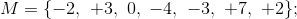
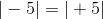
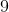

<!DOCTYPE html>
<html>
<head>


    <meta http-equiv="X-UA-Compatible" content="IE=edge"/>

    <meta name="Description" content="&#206;n cadrul acestei pagini intitulată Exerciții cu numere &#238;ntregi rezolvate vei putea vedea ce exerciții cu numere &#238;ntregi rezolvate ți-au fost pregătite de către profesorii noștri de matematică, specia (…)"/>


    <link rel="canonical" href="exercitii.html"/>

    <link rel="prev" href="../definire.html"/>
    <link rel="next" href="../operatii.html"/>

    <meta property="og:image" content="https://media.liceunet.ro/images/webbooks/medium/673.png"/>


<script>
  (function(i,s,o,g,r,a,m){i['GoogleAnalyticsObject']=r;i[r]=i[r]||function(){
  (i[r].q=i[r].q||[]).push(arguments)},i[r].l=1*new Date();a=s.createElement(o),
  m=s.getElementsByTagName(o)[0];a.async=1;a.src=g;m.parentNode.insertBefore(a,m)
  })(window,document,'script','//www.google-analytics.com/analytics.js','ga');
  ga('create', 'UA-49086582-6', 'auto');
  var dimensionValue = 'Subscriber';
  ga('set', 'dimension1', dimensionValue);
  ga('set', 'anonymizeIp', true);
  ga('send', 'pageview');
</script>

<title>Exercitii cu numere intregi rezolvate</title>
<link rel="icon" href="../../dist/assets/images/icons/favicons/11.ico" type="image/x-icon"/>
<link rel="apple-touch-icon" href="../../dist/assets/images/icons/favicons/11.png"/>
<meta name="apple-mobile-web-app-title" content="Liceunet.ro">
<meta name="application-name" content="Liceunet.ro"/>
<meta name="viewport" content="width=device-width,initial-scale=1"/>
<meta http-equiv="Content-Type" content="text/html;charset=UTF-8"/>
<meta name="msapplication-config" content="none"/>
<link rel="stylesheet" type="text/css" href="../../dist/vd-c1060f85efa2bd0e57c26b485f9edbcb/main.min.css"/>
     <script type="application/ld+json">{"@context":"https://schema.org","@type":"BreadcrumbList","itemListElement":[{"@type":"ListItem","Position":1,"Name":"Matematică","Item":"https://liceunet.ro/matematica"},{"@type":"ListItem","Position":2,"Name":"Ghid | Numere întregi","Item":"https://liceunet.ro/numere-intregi"},{"@type":"ListItem","Position":3,"Name":"Definirea numerelor întregi","Item":"https://liceunet.ro/numere-intregi/definire"}]}</script><script type="application/ld+json">{"@context":"https://schema.org","@type":"CreativeWork","Name":"Exercitii cu numere intregi rezolvate","Url":"https://liceunet.ro/numere-intregi/definire/exercitii","Author":[],"Description":"În cadrul acestei pagini intitulată Exerciții cu numere întregi rezolvate vei putea vedea ce exerciții cu numere întregi rezolvate ți-au fost pregătite de către profesorii noștri de matematică, specia (…)","Audience":{"@type":"EducationalAudience","EducationalRole":["student","teacher"]},"IsPartOf":[{"@context":"https://schema.org","@type":"Book","Name":"Ghid | Numere întregi","Url":"https://liceunet.ro/numere-intregi","Image":"https://media.liceunet.ro/images/webbooks/medium/673.png"}]}</script> 
</head>
<body class="">
        


<header class="container">
    <div id="react_0HMO3TFAAJLN9"><div class="header-top-fixed" data-reactroot=""><div class="header-top"><div class="header-logo"><a href="../../home.html" title="Liceunet.ro: înveți isteț și obții note mai mari"></a></div><div class="header-menu"><div class="icon"><div class="menu-icon-container"><div class="menu-icon-line"></div><div class="menu-icon-line"></div><div class="menu-icon-line"></div></div></div><div class="nav"><nav class="tabs"><ul><li><a href="https://liceunet.ro/b" title="Materii">Materii</a><span style="margin-left:0.5rem"><svg width="12px" height="12px" viewBox="0 0 5.54 10.28" class="svg-icon "><g transform="rotate(90 2 6)"><polygon points="1.59 10.28 0 9.07 3.03 5.09 0.07 1.21 1.66 0 5.54 5.09 1.59 10.28" fill="#1a242e"></polygon></g></svg></span></li><li><a href="https://liceunet.ro/autori-romani" title="Autori">Autori</a></li><li><a href="../../bacalaureat" title="Bacalaureat">Bacalaureat</a></li></ul></nav></div><div class="user"><nav><ul><li><div class="dropdown hidden"><div class="target"><a href="../../MyPage" title="Contul meu">Contul meu</a></div><div class="menu"><ul><li><a href="https://liceunet.ro/mypage/activities" title="Activitățile tale">Activitățile tale</a></li><li><a href="https://liceunet.ro/mypage/favorites" title="Preferințe">Preferințe</a></li><li><a href="https://liceunet.ro/mypage/reviewmissing" title="Feedback-ul tău">Feedback-ul tău</a></li><li><a href="../../mypage/orderhistory.html" title="Istoricul comenzilor">Istoricul comenzilor</a></li><li><a href="../../MyPage/MySubscription.html" title="Membru VIP">Membru VIP</a></li><li><a href="../../MyPage/Edit.html" title="Editare cont">Editare cont</a></li><li><a href="https://liceunet.ro/Members/Log-out" title="Log out">Log out</a></li></ul></div></div></li></ul></nav></div></div><div class="header-search"><div class="icon-wrapper"><svg width="32px" height="32px" viewBox="0 0 17.83 17.77" class="svg-icon inactive"><g><path d="M7,14a7,7,0,1,1,7-7A7,7,0,0,1,7,14ZM7,2a5,5,0,1,0,5,5A5,5,0,0,0,7,2Z" fill="#1f2d38"></path><rect x="14.13" y="12.23" width="2" height="5.66" transform="translate(-6.22 15.11) rotate(-45)" fill="#1f2d38"></rect></g></svg></div></div></div></div></div>
</header>


        
        <main class="container">

            
            


<div class="l-master-detail">
    <aside class="l-master">
        <div id="react_0HMO3TFAAJLN5"><div class="product-toc-wrapper" data-reactroot=""><div class="product-toc-items toc-fixed"><div class="product-toc-title"><div class="toc-toggle-bubble"><svg width="32px" height="32px" viewBox="0 0 40 40" class="svg-icon "><g transform=""><circle cx="20" cy="20" r="20" fill="#fff"></circle><rect x="19" y="12" width="2" height="16" transform="translate(-8.28 20) rotate(-45)" fill="#000"></rect><rect x="16.53" y="17.97" width="2" height="9" transform="translate(14.03 50.76) rotate(-135)" fill="#000"></rect><rect x="22.54" y="13.46" width="2" height="6" transform="translate(28.54 44.75) rotate(-135)" fill="#000"></rect></g></svg></div><div class="webbook-title"><a href="../../numere-intregi.html" title="Numere intregi | Ghid Gimnaziu" class="tocNoMatch">Ghid | Numere întregi</a></div></div><div class="product-toc-search"><div class="search-input"><div class="input"><input type="search" value="" placeholder="Caută în Ghid | Numere întregi"/></div><div class="search"><svg width="18px" height="18px" viewBox="0 0 17.83 17.77" class="svg-icon icon-search"><g><path d="M7,14a7,7,0,1,1,7-7A7,7,0,0,1,7,14ZM7,2a5,5,0,1,0,5,5A5,5,0,0,0,7,2Z" fill="#1f2d38"></path><rect x="14.13" y="12.23" width="2" height="5.66" transform="translate(-6.22 15.11) rotate(-45)" fill="#1f2d38"></rect></g></svg></div><div class="underline"></div></div></div><div class="product-toc"><div class="toc-container"><ul class="product-toc-list"><li class="active"><div class="toc-title"><span style="margin-right:10px">1<!-- -->.</span><a href="../definire.html" title="Definirea numerelor intregi" class="tocNoMatch">Definirea numerelor întregi</a></div><ul class=""><li class=""><div class="toc-title"><a style="margin-right:10px;color:#fff;font-weight:bold" href="exercitii.html" title="Exercitii cu numere intregi rezolvate" class="tocNoMatch">Exerciții cu numere întregi rezolvate</a></div></li></ul></li><li class=""><div class="toc-title"><span style="margin-right:10px">2<!-- -->.</span><a href="../operatii.html" title="Operatii cu numere intregi" class="tocNoMatch">Operații cu numere întregi</a></div><ul class=""><li class=""><div class="toc-title"><a href="../operatii/operatii-cu-numere-intregi.html" title="Exercitii rezolvate cu operatii cu numere intregi" class="tocNoMatch">Operații cu numere întregi - exerciții rezolvate</a></div></li></ul></li><li class=""><div class="toc-title"><span style="margin-right:10px">3<!-- -->.</span><a href="../divizibilitatea-numerelor-intregi.html" title="Divizibilitatea numerelor intregi" class="tocNoMatch">Divizibilitatea numerelor întregi</a></div><ul class=""><li class=""><div class="toc-title"><a href="../divizibilitatea-numerelor-intregi/exercitii.html" title="Exercitii rezolvate cu divizibilitatea numerelor intregi" class="tocNoMatch">Exerciții rezolvate cu divizibilitatea numerelor întregi</a></div></li></ul></li><li class=""><div class="toc-title"><span style="margin-right:10px">4<!-- -->.</span><a href="../matematica-distractiva.html" title="Matematica distractiva: utilizarea numerelor intregi" class="tocNoMatch">Matematică distractivă: utilizarea numerelor întregi</a></div></li></ul></div></div><div class="product-toc-tools"><a href="../i.html" title="Despre acest eBook"><svg width="20px" height="20px" viewBox="0 0 20 20" class="svg-icon "><g fill="#FFFFFF" transform="translate(-86.000000, -296.000000)"><g transform="translate(86.000000, 296.000000)"><path d="M9,15 L11,15 L11,9 L9,9 L9,15 L9,15 Z M10,0 C4.5,0 0,4.5 0,10 C0,15.5 4.5,20 10,20 C15.5,20 20,15.5 20,10 C20,4.5 15.5,0 10,0 L10,0 Z M10,18 C5.6,18 2,14.4 2,10 C2,5.6 5.6,2 10,2 C14.4,2 18,5.6 18,10 C18,14.4 14.4,18 10,18 L10,18 Z M9,7 L11,7 L11,5 L9,5 L9,7 L9,7 Z"></path></g></g></svg></a></div></div></div></div>
    </aside>
    <div class="l-detail">

<div id="react_0HMO3TFAAJLN6"></div>


        <div class="l-section">
            <div id="react_0HMO3TFAAJLN7"><div class="webbook-content-wrapper" data-reactroot=""><header class="webbook-header"><div class="webbook-title"><div class="webbook-list-bubble"><svg width="32px" height="32px" viewBox="0 0 30 30" class="svg-icon "><g transform=""><circle cx="15" cy="15" r="15" fill="#1f2d38"></circle><line x1="9" y1="11" x2="11" y2="11" fill="none" stroke="#fff" stroke-miterlimit="10" stroke-width="2"></line><line x1="12" y1="11" x2="22" y2="11" fill="none" stroke="#fff" stroke-miterlimit="10" stroke-width="2"></line><line x1="9" y1="15" x2="11" y2="15" fill="none" stroke="#fff" stroke-miterlimit="10" stroke-width="2"></line><line x1="12" y1="15" x2="22" y2="15" fill="none" stroke="#fff" stroke-miterlimit="10" stroke-width="2"></line><line x1="9" y1="19" x2="11" y2="19" fill="none" stroke="#fff" stroke-miterlimit="10" stroke-width="2"></line><line x1="12" y1="19" x2="22" y2="19" fill="none" stroke="#fff" stroke-miterlimit="10" stroke-width="2"></line></g></svg></div><div class="title"><a href="../../numere-intregi.html" title="Ghid | Numere întregi">Ghid | Numere întregi</a></div></div><div class="webbook-content"><ol class="breadcrumbs"><li><a href="../../matematica.html" title="Matematică">Matematică</a></li><li><a href="../../numere-intregi.html" title="Numere intregi | Ghid Gimnaziu">Ghid | Numere întregi</a></li><li><a href="../definire.html" title="Definirea numerelor intregi">Definirea numerelor întregi</a></li></ol></div></header><div class="webbook-content"><div class="webbook-content-aside"></div><article class="serif"><header class=""><h1 class="wrap">Exerciții cu numere întregi rezolvate</h1></header><div><h3><em><strong>​Exercițiul 1:&nbsp;</strong></em></h3><p>Să se reprezinte&nbsp;pe axa numerelor următoarele numere întregi:</p><ol start="1" style="list-style-type: lower-alpha;"><li></li></ol><ol start="2" style="list-style-type: lower-alpha;"><li></li></ol><ol start="3" style="list-style-type: lower-alpha;"><li></li></ol><p><em>Soluție:</em></p><ol start="1" style="list-style-type: lower-alpha;"><li>Trasăm axa numerelor, fixăm originea, sensul și ordonăm în ordine crescătoare numerele date:</li></ol><p></p><ol start="2" style="list-style-type: lower-alpha;"><li>Analog punctului a., trasăm axa numerelor, fixăm originea, sensul și ordonăm în ordine crescătoare numerele date:</li></ol><p></p><ol start="3" style="list-style-type: lower-alpha;"><li>La fel cum am procedat și în celelalte două cazuri de mai sus, numerele date se reprezintă astfel:</li></ol><p></p><h3><em><strong>Exercițiul 2:</strong></em></h3><p>Precizați care dintre numerele de mai jos sunt naturale și care sunt întregi:</p><ol start="1" style="list-style-type: lower-alpha;"><li></li></ol><ol start="2" style="list-style-type: lower-alpha;"><li></li></ol><p><em>Soluție:</em></p><ol start="1" style="list-style-type: lower-alpha;"><li>Dintre numere date, &nbsp;și&nbsp;&nbsp;sunt numere naturale, iar numerele &nbsp;și&nbsp;&nbsp;sunt numere întregi.</li></ol><ol start="2" style="list-style-type: lower-alpha;"><li>Avem: numere naturale &nbsp;și numere întregi&nbsp;.</li></ol><h3><em><strong>Exercițiul 3:</strong></em></h3><p>Să se scrie&nbsp;opusele numerelor:&nbsp;</p><p><em>Soluție:</em></p><p>Numerele opuse celor date sunt:</p><p><em></em></p><h3><em><strong>Exercițiul 4:</strong></em></h3><p>Pe o axă avem reprezentate următoarele numere:</p><p></p><ol start="1" style="list-style-type: lower-alpha;"><li>Scrie&nbsp;numerele întregi pozitive reprezentate pe axa de mai sus.</li></ol><ol start="2" style="list-style-type: lower-alpha;"><li>Scrie numerele întregi negative reprezentate pe axă.</li></ol><ol start="3" style="list-style-type: lower-alpha;"><li>Scrie perechile de numere întregi opuse reprezentate pe axă.</li></ol><p><em>Soluție:</em></p><ol start="1" style="list-style-type: lower-alpha;"><li>Numerele întregi pozitive reprezentate pe axa de mai sus sunt:&nbsp;.</li><li>Numerele întregi negative reprezentate pe axa dată sunt:&nbsp;.</li><li>Perechile de numere întregi opuse reprezentate pe axă sunt:&nbsp;.</li></ol><h3><em><strong>Exercițiul 5:</strong></em></h3><p>Scrie&nbsp;mulțimea , formată&nbsp;din opusele elementelor mulțimii:</p><ol start="1" style="list-style-type: lower-alpha;"><li></li></ol><ol start="2" style="list-style-type: lower-alpha;"><li></li></ol><p><em>Soluție:</em></p><ol start="1" style="list-style-type: lower-alpha;"><li></li></ol><ol start="2" style="list-style-type: lower-alpha;"><li>&nbsp;&nbsp;</li></ol><h3><em><strong>Exercițiul 6:</strong></em></h3><p>Să se precizeze&nbsp;numerele întregi cuprinse între numerele:</p><ol start="1" style="list-style-type: lower-alpha;"><li> și ;</li></ol><ol start="2" style="list-style-type: lower-alpha;"><li> și ;</li></ol><ol start="3" style="list-style-type: lower-alpha;"><li> și .</li></ol><p><em>Soluție:</em></p><ol start="1" style="list-style-type: lower-alpha;"><li>.</li></ol><ol start="2" style="list-style-type: lower-alpha;"><li>.</li></ol><ol start="3" style="list-style-type: lower-alpha;"><li>.</li></ol><h3><em><strong>Exercițiul 7:</strong></em></h3><p>Să se calculeze:&nbsp;.</p><p><em>Soluție:</em></p><p>Avem:</p><p></p><h3><em><strong>Exercițiul 8:</strong></em></h3><p>Să&nbsp;se stabilească&nbsp;valoarea de adevăr a următoarelor propoziții:</p><ol start="1" style="list-style-type: lower-alpha;"><li></li></ol><ol start="2" style="list-style-type: lower-alpha;"><li></li></ol><ol start="3" style="list-style-type: lower-alpha;"><li></li></ol><ol start="4" style="list-style-type: lower-alpha;"><li></li></ol><ol start="5" style="list-style-type: lower-alpha;"><li></li></ol><p><em>Soluție:</em></p><ol start="1" style="list-style-type: lower-alpha;"><li>Adevărat, deoarece&nbsp;&nbsp;și&nbsp;, ceea ce implică faptul că&nbsp;.&nbsp;</li></ol><ol start="2" style="list-style-type: lower-alpha;"><li>Adevărat, deoarece&nbsp;&nbsp;și&nbsp;, de unde avem că&nbsp;, adică&nbsp;.</li></ol><ol start="3" style="list-style-type: lower-alpha;"><li>Avem&nbsp;, ceea ce implică ,&nbsp;adică fals.&nbsp;</li></ol><ol start="4" style="list-style-type: lower-alpha;"><li>Adevărat, deoarece&nbsp;.</li></ol><ol start="5" style="list-style-type: lower-alpha;"><li>Adevărat, deoarece&nbsp;.</li></ol><h3><em><strong>Exercițiul 9:</strong></em></h3><p>Să se compare:</p><ol start="1" style="list-style-type: lower-alpha;"><li>&nbsp;și&nbsp;</li></ol><ol start="2" style="list-style-type: lower-alpha;"><li>&nbsp;și&nbsp;</li></ol><ol start="3" style="list-style-type: lower-alpha;"><li>&nbsp;și&nbsp;</li></ol><ol start="4" style="list-style-type: lower-alpha;"><li>&nbsp;și&nbsp;</li></ol><ol start="5" style="list-style-type: lower-alpha;"><li>&nbsp;și&nbsp;</li></ol><p><em>Soluție:</em></p><ol start="1" style="list-style-type: lower-alpha;"><li></li></ol><ol start="2" style="list-style-type: lower-alpha;"><li></li></ol><ol start="3" style="list-style-type: lower-alpha;"><li></li></ol><ol start="4" style="list-style-type: lower-alpha;"><li></li></ol><ol start="5" style="list-style-type: lower-alpha;"><li></li></ol><h3><em><strong>Exercițiul 10:</strong></em></h3><p>Să se determine&nbsp;valoarea absolută&nbsp;a următoarelor numere întregi:&nbsp;</p><p><em>Soluție:</em></p><p>Folosind definiția modulului (valorii anbsolute a) unui număr întreg, avem:</p><p></p><h3><em><strong>Exercițiul 11:</strong></em></h3><p>Să se ordoneze&nbsp;crescător numerele:&nbsp;</p><ol start="1" style="list-style-type: lower-alpha;"><li></li></ol><ol start="2" style="list-style-type: lower-alpha;"><li></li></ol><p><em>Soluție:</em></p><ol start="1" style="list-style-type: lower-alpha;"><li>Numerele date se ordonează crescător astfel:</li></ol><p></p><ol start="2" style="list-style-type: lower-alpha;"><li>Avem următoarea ordonare crescătoare a numerelor date:</li></ol><p></p><h3><em><strong>Exercițiul 12:</strong></em></h3><p>Să se ordoneze&nbsp;descrescător numerele:</p><ol start="1" style="list-style-type: lower-alpha;"><li></li></ol><ol start="2" style="list-style-type: lower-alpha;"><li></li></ol><p><em>Soluție:</em></p><ol start="1" style="list-style-type: lower-alpha;"><li>Numerele date se ordonează descrescător astfel:</li></ol><p>.</p><ol start="2" style="list-style-type: lower-alpha;"><li>Ordonate descrescător, numerele date sunt:</li></ol><p>.</p></div></article></div><div class="webbook-content"><div class="page-navigation"><a href="../definire.html" title="Definirea numerelor intregi" class="previous-page"><svg width="2.5em" height="2.5em" viewBox="0 0 30 30" class="svg-icon "><g transform="rotate(180 15 15)"><circle cx="15" cy="15" r="15" fill="#0075e3"></circle><rect x="13" y="10" width="2" height="10" transform="translate(-1 29) rotate(-90)" fill="#fff"></rect><polyline points="16.77 19.76 20.26 15.18 16.84 10.69" fill="none" stroke="#fff" stroke-miterlimit="10" stroke-width="2"></polyline></g></svg><span class="visible-inline-mobile"></span><span class="visible-inline-desktop">Definirea numerelor întregi</span></a><a href="../operatii.html" title="Operatii cu numere intregi" class="next-page"><span class="visible-inline-mobile"></span><span class="visible-inline-desktop">Operații cu numere întregi</span><svg width="2.5em" height="2.5em" viewBox="0 0 30 30" class="svg-icon "><g transform=""><circle cx="15" cy="15" r="15" fill="#0075e3"></circle><rect x="13" y="10" width="2" height="10" transform="translate(-1 29) rotate(-90)" fill="#fff"></rect><polyline points="16.77 19.76 20.26 15.18 16.84 10.69" fill="none" stroke="#fff" stroke-miterlimit="10" stroke-width="2"></polyline></g></svg></a></div></div></div></div>
            <aside class="l-toolbar">
                <div id="react_0HMO3TFAAJLN8"><div class="toolbar webbook-toolbar" data-reactroot=""><ul class="tools"><li><a href="../i.html" class="item"><span class="tooltip">Despre acest eBook</span><svg width="20px" height="20px" viewBox="0 0 20 20" class="svg-icon "><g fill="#FFFFFF" transform="translate(-86.000000, -296.000000)"><g transform="translate(86.000000, 296.000000)"><path d="M9,15 L11,15 L11,9 L9,9 L9,15 L9,15 Z M10,0 C4.5,0 0,4.5 0,10 C0,15.5 4.5,20 10,20 C15.5,20 20,15.5 20,10 C20,4.5 15.5,0 10,0 L10,0 Z M10,18 C5.6,18 2,14.4 2,10 C2,5.6 5.6,2 10,2 C14.4,2 18,5.6 18,10 C18,14.4 14.4,18 10,18 L10,18 Z M9,7 L11,7 L11,5 L9,5 L9,7 L9,7 Z"></path></g></g></svg></a></li><li><div class="item"><span class="tooltip">Selectează ca favorit</span><svg width="20px" height="20px" viewBox="0 0 512 512" class="svg-icon "><g><path fill="#FFFFFF" d="M458.4 64.3C400.6 15.7 311.3 23 256 79.3 200.7 23 111.4 15.6 53.6 64.3-21.6 127.6-10.6 230.8 43 285.5l175.4 178.7c10 10.2 23.4 15.9 37.6 15.9 14.3 0 27.6-5.6 37.6-15.8L469 285.6c53.5-54.7 64.7-157.9-10.6-221.3zm-23.6 187.5L259.4 430.5c-2.4 2.4-4.4 2.4-6.8 0L77.2 251.8c-36.5-37.2-43.9-107.6 7.3-150.7 38.9-32.7 98.9-27.8 136.5 10.5l35 35.7 35-35.7c37.8-38.5 97.8-43.2 136.5-10.6 51.1 43.1 43.5 113.9 7.3 150.8z"></path></g></svg></div></li></ul></div></div>
            </aside>
        </div>


<footer class="container footer-main">
    <nav class="footer-navigation">
        <div class="categories">
            <div class="column">
    <div class="category">
        <p class="heading">Despre noi</p>
        <ul>
                <li>
                    <a href="../../despre-noi.html" title="Despre noi">Despre noi</a>
                </li>
                <li>
                    <a href="../../info/terms" title="Termeni și condiții">Termeni și condiții</a>
                </li>
                <li>
                    <a href="../../info/terms/privacy.html" title="Politica de confidențialitate">Politica de confidențialitate</a>
                </li>
                <li>
                    <a href="../../info/terms/subscription" title="Termenii și condițiile abonamentului">Termenii și condițiile abonamentului</a>
                </li>
        </ul>
    </div>
    <div class="category">
        <p class="heading">Căutări populare</p>
        <ul>
                <li>
                    <a href="../../genul-literar" title="Genuri literare">Genuri literare</a>
                </li>
                <li>
                    <a href="https://liceunet.ro/teste-de-antrenament" title="Teste de antrenament">Teste de antrenament</a>
                </li>
                <li>
                    <a href="https://liceunet.ro/recently-added" title="Materiale adăugate recent">Materiale adăugate recent</a>
                </li>
                <li>
                    <a href="https://liceunet.ro/opere-literare" title="Lista operelor literare">Lista operelor literare</a>
                </li>
                <li>
                    <a href="../../statul-roman-modern" title=" Statul rom&#226;n modern"> Statul rom&#226;n modern</a>
                </li>
        </ul>
    </div>
            </div>
                <div class="column">
    <div class="category">
        <p class="heading">Serviciul clienti</p>
        <ul>
                <li>
                    <a href="https://liceunet.ro/support" title="Contact">Contact</a>
                </li>
                <li>
                    <a href="https://liceunet.ro/faq" title="FAQ">FAQ</a>
                </li>
        </ul>
    </div>
                </div>
        </div>
    </nav>
    <div class="meta">
        <div class="address">
            <address>
    <span class="site">
    	Liceunet.ro
    </span>
    <span vocab="http://schema.org/" typeof="PostalAddress">
        <span property="streetAddress">Gheorghe Lazăr, Nr. 24, Et. 13, Ap. 81</span>, 
        <span property="postalCode">300081</span> <span property="addressLocality">Timișoara</span>, <span property="addressCountry">România</span>
    </span>  
</address>


        </div>
        <div class="go-to-top">
            <a href="#">
                <span class="text">
                    Revino sus
                </span>
                <svg width="32px" height="32px" viewBox="0 0 30 30" class="svg-icon icon-arrow">
                    <g transform="rotate(-90 15 15)">
                        <circle cx="15" cy="15" r="15" fill="#fff"></circle>
                        <rect x="13" y="10" width="2" height="10" transform="translate(-1 29) rotate(-90)" fill="#0075e3"></rect>
                        <polyline points="16.77 19.76 20.26 15.18 16.84 10.69" fill="none" stroke="#0075e3" stroke-miterlimit="10" stroke-width="2"></polyline>
                    </g>
                </svg>
            </a>
        </div>
    </div>
</footer>


    </div>
</div>


        </main>


        <div id="react_0HMO3TFAAJLNA"></div>
        <div id="react_0HMO3TFAAJLNB"></div>

        <script src="../../dist/assets/statics/vd-7e1b0e3b6a74b1f7669d2a19d9fd9d51/polyfills.min.js"></script>
        <script src="../../dist/vd-2bf116a0124d7e23a990db852e650b5e/commons.client.js"></script>
        <script src="../../dist/vd-57ae325b8bb3ddff3f36989caf22a982/main.client.js"></script>

        
    <script src="../../dist/vd-4fef7b3c7755db7c79375301d5e09f37/webbook.client.js"></script>

        <script nonce="">ReactDOM.hydrate(React.createElement(Webbook.TOC, {"toc":{"Id":5450,"Children":[{"Id":5451,"Children":[{"Id":6542,"Children":[],"Link":{"Uri":"/numere-intregi/definire/exercitii","Text":"Exerciții cu numere întregi rezolvate","PresentationTitleText":null,"Tooltip":"Exercitii cu numere intregi rezolvate"},"HasMatch":false,"ShowNumbers":false}],"Link":{"Uri":"/numere-intregi/definire","Text":"Definirea numerelor întregi","PresentationTitleText":null,"Tooltip":"Definirea numerelor intregi"},"HasMatch":false,"ShowNumbers":false},{"Id":5452,"Children":[{"Id":6553,"Children":[],"Link":{"Uri":"/numere-intregi/operatii/operatii-cu-numere-intregi","Text":"Operații cu numere întregi - exerciții rezolvate","PresentationTitleText":null,"Tooltip":"Exercitii rezolvate cu operatii cu numere intregi"},"HasMatch":false,"ShowNumbers":false}],"Link":{"Uri":"/numere-intregi/operatii","Text":"Operații cu numere întregi","PresentationTitleText":null,"Tooltip":"Operatii cu numere intregi"},"HasMatch":false,"ShowNumbers":false},{"Id":5501,"Children":[{"Id":6554,"Children":[],"Link":{"Uri":"/numere-intregi/divizibilitatea-numerelor-intregi/exercitii","Text":"Exerciții rezolvate cu divizibilitatea numerelor întregi","PresentationTitleText":null,"Tooltip":"Exercitii rezolvate cu divizibilitatea numerelor intregi"},"HasMatch":false,"ShowNumbers":false}],"Link":{"Uri":"/numere-intregi/divizibilitatea-numerelor-intregi","Text":"Divizibilitatea numerelor întregi","PresentationTitleText":null,"Tooltip":"Divizibilitatea numerelor intregi"},"HasMatch":false,"ShowNumbers":false},{"Id":6572,"Children":[],"Link":{"Uri":"/numere-intregi/matematica-distractiva","Text":"Matematică distractivă: utilizarea numerelor întregi","PresentationTitleText":null,"Tooltip":"Matematica distractiva: utilizarea numerelor intregi"},"HasMatch":false,"ShowNumbers":false}],"Link":{"Uri":"/numere-intregi","Text":"Ghid | Numere întregi","PresentationTitleText":null,"Tooltip":"Numere intregi | Ghid Gimnaziu"},"HasMatch":false,"ShowNumbers":true},"localizations":{"SearchContentPlaceholder":"Caută în Ghid | Numere întregi","PreviousPage":"Anterior","NextPage":"Următoarea","FavouriteDeselect":"Anulează preferința","FavouriteSelect":"Selectează ca favorit","FavouriteNotificationDeselect":"eBook-ul a fost eliminat din lista de preferate.","FavouriteNotificationSelect":"Ai marcat acest eBook ca favorit. Poți găsi preferințele tale în \u003ca href=\u0022/home\u0022\u003eprima pagină\u003c/a\u003e și în \u003ca href=\u0022/mypage/favorites\u0022\u003elista de favorite\u003c/a\u003e."},"toolbarItems":[{"Tooltip":null,"Url":null,"Type":"Favourite","Parameters":{"webbookId":"49deb570-c071-4851-bbff-4d86741513a3","isFavourite":false}},{"Tooltip":"Despre acest eBook","Url":"/numere-intregi/i","Type":"Info","Parameters":null}],"query":"","tocFixed":true,"productId":"125e5a73-fb3f-4ec8-920f-8d11587e2c6b","pathName":"/numere-intregi/definire/exercitii","preserveSalesTextQueryString":false}), document.getElementById("react_0HMO3TFAAJLN5"));
ReactDOM.hydrate(React.createElement(Main.Notification, {"notification":null}), document.getElementById("react_0HMO3TFAAJLN6"));
ReactDOM.hydrate(React.createElement(Webbook.Content, {"page":{"TOC":{"Id":5450,"Children":[{"Id":5451,"Children":[{"Id":6542,"Children":[],"Link":{"Uri":"/numere-intregi/definire/exercitii","Text":"Exerciții cu numere întregi rezolvate","PresentationTitleText":null,"Tooltip":"Exercitii cu numere intregi rezolvate"},"HasMatch":false,"ShowNumbers":false}],"Link":{"Uri":"/numere-intregi/definire","Text":"Definirea numerelor întregi","PresentationTitleText":null,"Tooltip":"Definirea numerelor intregi"},"HasMatch":false,"ShowNumbers":false},{"Id":5452,"Children":[{"Id":6553,"Children":[],"Link":{"Uri":"/numere-intregi/operatii/operatii-cu-numere-intregi","Text":"Operații cu numere întregi - exerciții rezolvate","PresentationTitleText":null,"Tooltip":"Exercitii rezolvate cu operatii cu numere intregi"},"HasMatch":false,"ShowNumbers":false}],"Link":{"Uri":"/numere-intregi/operatii","Text":"Operații cu numere întregi","PresentationTitleText":null,"Tooltip":"Operatii cu numere intregi"},"HasMatch":false,"ShowNumbers":false},{"Id":5501,"Children":[{"Id":6554,"Children":[],"Link":{"Uri":"/numere-intregi/divizibilitatea-numerelor-intregi/exercitii","Text":"Exerciții rezolvate cu divizibilitatea numerelor întregi","PresentationTitleText":null,"Tooltip":"Exercitii rezolvate cu divizibilitatea numerelor intregi"},"HasMatch":false,"ShowNumbers":false}],"Link":{"Uri":"/numere-intregi/divizibilitatea-numerelor-intregi","Text":"Divizibilitatea numerelor întregi","PresentationTitleText":null,"Tooltip":"Divizibilitatea numerelor intregi"},"HasMatch":false,"ShowNumbers":false},{"Id":6572,"Children":[],"Link":{"Uri":"/numere-intregi/matematica-distractiva","Text":"Matematică distractivă: utilizarea numerelor întregi","PresentationTitleText":null,"Tooltip":"Matematica distractiva: utilizarea numerelor intregi"},"HasMatch":false,"ShowNumbers":false}],"Link":{"Uri":"/numere-intregi","Text":"Ghid | Numere întregi","PresentationTitleText":null,"Tooltip":"Numere intregi | Ghid Gimnaziu"},"HasMatch":false,"ShowNumbers":true},"NextPage":{"Uri":"/numere-intregi/operatii","Text":"Operații cu numere întregi","PresentationTitleText":null,"Tooltip":"Operatii cu numere intregi"},"PreviousPage":{"Uri":"/numere-intregi/definire","Text":"Definirea numerelor întregi","PresentationTitleText":null,"Tooltip":"Definirea numerelor intregi"},"IsFrontPage":false,"Breadcrumbs":[{"Uri":"/matematica","Text":"Matematică","Tooltip":"Matematică"},{"Uri":"/numere-intregi","Text":"Ghid | Numere întregi","Tooltip":"Numere intregi | Ghid Gimnaziu"},{"Uri":"/numere-intregi/definire","Text":"Definirea numerelor întregi","Tooltip":"Definirea numerelor intregi"}],"OverlaySalesText":null,"CanonicalUri":"https://liceunet.ro/numere-intregi/definire/exercitii","ReviewModel":{"RatingsWorst":1,"RatingsBest":6,"ProductId":"49deb570-c071-4851-bbff-4d86741513a3","RatingsAvg":0.0,"ReviewCount":0,"ProductTitle":"Ghid | Numere întregi","Reviews":[],"MemberCanReview":false,"ShouldDisplayReviewPopup":false,"Localizations":{"ReviewGivenBy":"Scris de","ReviewViewAll":"Toate review-urile","ReviewRatingLabel":"1. Evaluarea ta pentru acest produs","ReviewCommentLabel":"2. Review-ul tău","ReviewHeader":"Acum adaugi review pentru:","ReviewSubmitSuccess":"Îți mulțumim pentru review-ul materialului Ghid | Numere întregi.","ReviewButton":"Adaugă review","ReviewCommentPlaceholder":"Adaugă un comentariu","ReviewValidationRating":"Te rugăm să selectezi numărul de stele pe care le acorzi acestui produs","ReviewSubmitFailure":"A apărut o eroare și review-ul tău nu a fost salvat.","RequestSubmitFailed":"Te rugăm completează toate câmpurile","ReviewSubTitle":"Produsul nu are încă un review - poți fi primul care înregistrează un review."}},"BookTitle":"Ghid | Numere întregi","PresentationTitle":null,"BookUri":{"Uri":"https://liceunet.ro/numere-intregi","Text":null,"PresentationTitleText":null,"Tooltip":null},"BookImagePath":"https://media.liceunet.ro/images/webbooks/medium/673.png","Access":{"HasAccess":true,"CanReview":false,"LoggedIn":true},"MetaRobots":null,"PreserveSalesTextQueryString":false,"ForceShowRating":false,"ToolbarItems":[{"Tooltip":null,"Url":null,"Type":"Favourite","Parameters":{"webbookId":"49deb570-c071-4851-bbff-4d86741513a3","isFavourite":false}},{"Tooltip":"Despre acest eBook","Url":"/numere-intregi/i","Type":"Info","Parameters":null}],"SchemaOrg":[{"@context":"https://schema.org","@type":"BreadcrumbList","itemListElement":[{"@type":"ListItem","Position":1,"Name":"Matematică","Item":"https://liceunet.ro/matematica"},{"@type":"ListItem","Position":2,"Name":"Ghid | Numere întregi","Item":"https://liceunet.ro/numere-intregi"},{"@type":"ListItem","Position":3,"Name":"Definirea numerelor întregi","Item":"https://liceunet.ro/numere-intregi/definire"}]},{"@context":"https://schema.org","@type":"CreativeWork","Name":"Exercitii cu numere intregi rezolvate","Url":"https://liceunet.ro/numere-intregi/definire/exercitii","Author":[],"Description":"În cadrul acestei pagini intitulată Exerciții cu numere întregi rezolvate vei putea vedea ce exerciții cu numere întregi rezolvate ți-au fost pregătite de către profesorii noștri de matematică, specia (…)","Audience":{"@type":"EducationalAudience","EducationalRole":["student","teacher"]},"IsPartOf":[{"@context":"https://schema.org","@type":"Book","Name":"Ghid | Numere întregi","Url":"https://liceunet.ro/numere-intregi","Image":"https://media.liceunet.ro/images/webbooks/medium/673.png"}]}],"ProductId":"125e5a73-fb3f-4ec8-920f-8d11587e2c6b","Title":"Exerciții cu numere întregi rezolvate","Content":"\u003ch3\u003e\u003cem\u003e\u003cstrong\u003e​Exercițiul 1:\u0026nbsp;\u003c/strong\u003e\u003c/em\u003e\u003c/h3\u003e\u003cp\u003eSă se reprezinte\u0026nbsp;pe axa numerelor următoarele numere întregi:\u003c/p\u003e\u003col start=\u00221\u0022 style=\u0022list-style-type: lower-alpha;\u0022\u003e\u003cli\u003e\u003cimg alt=\u0022-5,\\ +1 ,\\ 0 ,\\ -1,\\ +2,\\ -4;\u0022 src=\u0022/media/webbooks/673/6542/images/equations/emk7lm4k_4zg5rzbpjwryw==.gif\u0022 /\u003e\u003c/li\u003e\u003c/ol\u003e\u003col start=\u00222\u0022 style=\u0022list-style-type: lower-alpha;\u0022\u003e\u003cli\u003e\u003cimg alt=\u0022-7,\\ +4,\\ -3,\\ 0,\\ -2,\\ +5;\u0022 src=\u0022/media/webbooks/673/6542/images/equations/ghpfotmmjayt3vgdrjxi3g==.gif\u0022 /\u003e\u003c/li\u003e\u003c/ol\u003e\u003col start=\u00223\u0022 style=\u0022list-style-type: lower-alpha;\u0022\u003e\u003cli\u003e\u003cimg alt=\u0022-5,\\ -3,\\ 4,\\ -7,\\ 3,\\ +5.\u0022 src=\u0022/media/webbooks/673/6542/images/equations/-qbm39nubwsbcp-u4x8smg==.gif\u0022 /\u003e\u003c/li\u003e\u003c/ol\u003e\u003cp\u003e\u003cem\u003eSoluție:\u003c/em\u003e\u003c/p\u003e\u003col start=\u00221\u0022 style=\u0022list-style-type: lower-alpha;\u0022\u003e\u003cli\u003eTras\u0015ăm axa numerelor, fixăm originea, sensul și ordon\u0015ăm î\u0010n ordine crescătoare numerele date:\u003c/li\u003e\u003c/ol\u003e\u003cp\u003e\u003cimg alt=\u0022\u0022 data-lightbox=\u0022true\u0022 style=\u0022width: 500px; height: 147px;\u0022 src=\u0022https://liceunet.ro/cms/media/images/6542/Gimnaziu%20Mate%20Corina/Screen%20Shot%202016-10-06%20at%2008_57_04.png\u0022 /\u003e\u003c/p\u003e\u003col start=\u00222\u0022 style=\u0022list-style-type: lower-alpha;\u0022\u003e\u003cli\u003eAnalog punctului a., trasăm axa numerelor, fixăm originea, sensul și ordonăm în ordine crescătoare numerele date:\u003c/li\u003e\u003c/ol\u003e\u003cp\u003e\u003cimg alt=\u0022\u0022 data-lightbox=\u0022true\u0022 style=\u0022width: 500px; height: 123px;\u0022 src=\u0022https://liceunet.ro/cms/media/images/6542/Gimnaziu%20Mate%20Corina/Screen%20Shot%202016-10-06%20at%2009_00_12.png\u0022 /\u003e\u003c/p\u003e\u003col start=\u00223\u0022 style=\u0022list-style-type: lower-alpha;\u0022\u003e\u003cli\u003eLa fel cum am procedat și în celelalte două cazuri de mai sus, numerele date se reprezintă astfel:\u003c/li\u003e\u003c/ol\u003e\u003cp\u003e\u003cimg alt=\u0022\u0022 data-lightbox=\u0022true\u0022 style=\u0022width: 500px; height: 115px;\u0022 src=\u0022https://liceunet.ro/cms/media/images/6542/Gimnaziu%20Mate%20Corina/Screen%20Shot%202016-10-06%20at%2009_03_34.png\u0022 /\u003e\u003c/p\u003e\u003ch3\u003e\u003cem\u003e\u003cstrong\u003eExercițiul 2:\u003c/strong\u003e\u003c/em\u003e\u003c/h3\u003e\u003cp\u003ePrecizați care dintre numerele de mai jos sunt naturale și care sunt întregi:\u003c/p\u003e\u003col start=\u00221\u0022 style=\u0022list-style-type: lower-alpha;\u0022\u003e\u003cli\u003e\u003cimg alt=\u0022-17;\\ +3;\\ 0;\\ 4,7; \\ -13; \\ 2,1(3);\u0022 src=\u0022/media/webbooks/673/6542/images/equations/exfjbbsw916t3ztxz9xjmw==.gif\u0022 /\u003e\u003c/li\u003e\u003c/ol\u003e\u003col start=\u00222\u0022 style=\u0022list-style-type: lower-alpha;\u0022\u003e\u003cli\u003e\u003cimg alt=\u0022-3;\\ 0;\\ 83;\\ +15;\\ -2,7;\\ +43;\\ -17.\u0022 src=\u0022/media/webbooks/673/6542/images/equations/kdpyfnecj-svym2c3n48xq==.gif\u0022 /\u003e\u003c/li\u003e\u003c/ol\u003e\u003cp\u003e\u003cem\u003eSoluție:\u003c/em\u003e\u003c/p\u003e\u003col start=\u00221\u0022 style=\u0022list-style-type: lower-alpha;\u0022\u003e\u003cli\u003eDintre numere date, \u003cimg alt=\u0022+3\u0022 src=\u0022/media/webbooks/673/6542/images/equations/w_ri447bi5-fmdfnybzgua==.gif\u0022 /\u003e\u0026nbsp;și\u0026nbsp;\u003cimg alt=\u00220\u0022 src=\u0022/media/webbooks/673/6542/images/equations/z80ghjxvze9m59_5-ydk2g==.gif\u0022 /\u003e\u0026nbsp;sunt numere naturale, iar numerele \u003cimg alt=\u0022-17,\\ +3,\\ 0\u0022 src=\u0022/media/webbooks/673/6542/images/equations/ozk5feydsnedz9lnqe_0dg==.gif\u0022 /\u003e\u0026nbsp;și\u0026nbsp;\u003cimg alt=\u0022-13\u0022 src=\u0022/media/webbooks/673/6542/images/equations/th7teoizvt0ma9yzlj7aha==.gif\u0022 /\u003e\u0026nbsp;sunt numere întregi.\u003c/li\u003e\u003c/ol\u003e\u003col start=\u00222\u0022 style=\u0022list-style-type: lower-alpha;\u0022\u003e\u003cli\u003eAvem: numere naturale \u003cimg alt=\u00220,\\ 83,\\ +15,\\ +43\u0022 src=\u0022/media/webbooks/673/6542/images/equations/aez2-xrhyvx5fyepbh2lhq==.gif\u0022 /\u003e\u0026nbsp;și numere întregi\u0026nbsp;\u003cimg alt=\u0022-3,\\ 0,\\ 83,\\ +15,\\ +43,\\ -17\u0022 src=\u0022/media/webbooks/673/6542/images/equations/km7g31uhsvzuasawql9-za==.gif\u0022 /\u003e.\u003c/li\u003e\u003c/ol\u003e\u003ch3\u003e\u003cem\u003e\u003cstrong\u003eExercițiul 3:\u003c/strong\u003e\u003c/em\u003e\u003c/h3\u003e\u003cp\u003eSă se scrie\u0026nbsp;opusele numerelor:\u0026nbsp;\u003cimg alt=\u0022+3,\\ -14,\\ 0,\\ +11,\\ -13,\\ 2,\\ -3,\\ 4,\\ -7,\\ +5,\\ -12.\u0022 src=\u0022/media/webbooks/673/6542/images/equations/myr-asnqnwphepj0fe1fdq==.gif\u0022 /\u003e\u003c/p\u003e\u003cp\u003e\u003cem\u003eSoluție:\u003c/em\u003e\u003c/p\u003e\u003cp\u003eNumerele opuse celor date sunt:\u003c/p\u003e\u003cp\u003e\u003cem\u003e\u003cimg alt=\u0022-3,\\ +14,\\ 0,\\ -11,\\ +13,\\ -2,\\ +3,\\ -4,\\ +7,\\ -5,\\ +12.\u0022 src=\u0022/media/webbooks/673/6542/images/equations/xhmud_dpvj_0zjrnhdrtxg==.gif\u0022 /\u003e\u003c/em\u003e\u003c/p\u003e\u003ch3\u003e\u003cem\u003e\u003cstrong\u003eExercițiul 4:\u003c/strong\u003e\u003c/em\u003e\u003c/h3\u003e\u003cp\u003ePe o axă avem reprezentate următoarele numere:\u003c/p\u003e\u003cp\u003e\u003cimg alt=\u0022\u0022 data-lightbox=\u0022true\u0022 style=\u0022width: 500px; height: 137px;\u0022 src=\u0022https://liceunet.ro/cms/media/images/6542/Gimnaziu%20Mate%20Corina/Screen%20Shot%202016-10-06%20at%2009_18_44.png\u0022 /\u003e\u003c/p\u003e\u003col start=\u00221\u0022 style=\u0022list-style-type: lower-alpha;\u0022\u003e\u003cli\u003eScrie\u0026nbsp;numerele întregi pozitive reprezentate pe axa de mai sus.\u003c/li\u003e\u003c/ol\u003e\u003col start=\u00222\u0022 style=\u0022list-style-type: lower-alpha;\u0022\u003e\u003cli\u003eScrie numerele întregi negative reprezentate pe axă.\u003c/li\u003e\u003c/ol\u003e\u003col start=\u00223\u0022 style=\u0022list-style-type: lower-alpha;\u0022\u003e\u003cli\u003eScrie perechile de numere întregi opuse reprezentate pe axă.\u003c/li\u003e\u003c/ol\u003e\u003cp\u003e\u003cem\u003eSoluție:\u003c/em\u003e\u003c/p\u003e\u003col start=\u00221\u0022 style=\u0022list-style-type: lower-alpha;\u0022\u003e\u003cli\u003eNumerele întregi pozitive reprezentate pe axa de mai sus sunt:\u0026nbsp;\u003cimg alt=\u0022+1, +2, +4\u0022 src=\u0022/media/webbooks/673/6542/images/equations/ohhov3krfgco-j6ilcufqg==.svg\u0022 /\u003e.\u003c/li\u003e\u003cli\u003eNumerele întregi negative reprezentate pe axa dată sunt:\u0026nbsp;\u003cimg alt=\u0022-4,\\ -3,\\ -1\u0022 src=\u0022/media/webbooks/673/6542/images/equations/hycy9kqvhqlo0u3xitkodw==.gif\u0022 /\u003e.\u003c/li\u003e\u003cli\u003ePerechile de numere întregi opuse reprezentate pe axă sunt:\u0026nbsp;\u003cimg alt=\u0022(-4,+4);\\ (-1,+1)\u0022 src=\u0022/media/webbooks/673/6542/images/equations/eqfvba8kqaazaoixbjgcow==.gif\u0022 /\u003e.\u003c/li\u003e\u003c/ol\u003e\u003ch3\u003e\u003cem\u003e\u003cstrong\u003eExercițiul 5:\u003c/strong\u003e\u003c/em\u003e\u003c/h3\u003e\u003cp\u003eScrie\u0026nbsp;mulțimea \u003cimg alt=\u0022A\u0022 src=\u0022/media/webbooks/673/6542/images/equations/f8vicoend6gawtw3lqy-kq==.gif\u0022 /\u003e, formată\u0026nbsp;din opusele elementelor mulțimii:\u003c/p\u003e\u003col start=\u00221\u0022 style=\u0022list-style-type: lower-alpha;\u0022\u003e\u003cli\u003e\u003cimg alt=\u0022M=\\{ -2,\\ +3,\\ 0,\\ -4, \\ -3, \\ +7, \\ +2\\};\u0022 src=\u0022/media/webbooks/673/6542/images/equations/kyvzxznbyqtwi1njklb2yq==.gif\u0022 /\u003e\u003c/li\u003e\u003c/ol\u003e\u003col start=\u00222\u0022 style=\u0022list-style-type: lower-alpha;\u0022\u003e\u003cli\u003e\u003cimg alt=\u0022M=\\{ x\\in\\mathbb{Z}\\ | -4 \\leq x \\leq 3 \\}.\u0022 src=\u0022/media/webbooks/673/6542/images/equations/9menpfnru-ch7xp_oeoapw==.gif\u0022 /\u003e\u003c/li\u003e\u003c/ol\u003e\u003cp\u003e\u003cem\u003eSoluție:\u003c/em\u003e\u003c/p\u003e\u003col start=\u00221\u0022 style=\u0022list-style-type: lower-alpha;\u0022\u003e\u003cli\u003e\u003cimg alt=\u0022A=\\{+2,\\ -3,\\ 0,\\ +4,\\ +3,\\ -7,\\ -2\\}.\u0022 src=\u0022/media/webbooks/673/6542/images/equations/dsl30oc-vkxretytmjphpw==.gif\u0022 /\u003e\u003c/li\u003e\u003c/ol\u003e\u003col start=\u00222\u0022 style=\u0022list-style-type: lower-alpha;\u0022\u003e\u003cli\u003e\u003cimg alt=\u0022M=\\{-4,\\ -3,\\ -2,\\ -1,\\ 0,\\ 1,\\ 2,\\ 3\\}\u0022 src=\u0022/media/webbooks/673/6542/images/equations/q8ag0abrzdom59ltksdw9w==.gif\u0022 /\u003e\u0026nbsp;\u003cimg alt=\u0022\\Rightarrow\u0022 src=\u0022/media/webbooks/673/6542/images/equations/bvijqu44t8u_muxeqqqjla==.gif\u0022 /\u003e\u0026nbsp;\u003cimg alt=\u0022A=\\{+4,\\ +3,\\ +2,\\ +1,\\ 0,\\ -1,\\ -2,\\ -3\\}.\u0022 src=\u0022/media/webbooks/673/6542/images/equations/1otq3muxgzez4eob7j9kbw==.gif\u0022 /\u003e\u003c/li\u003e\u003c/ol\u003e\u003ch3\u003e\u003cem\u003e\u003cstrong\u003eExercițiul 6:\u003c/strong\u003e\u003c/em\u003e\u003c/h3\u003e\u003cp\u003eSă se precizeze\u0026nbsp;numerele întregi cuprinse între numerele:\u003c/p\u003e\u003col start=\u00221\u0022 style=\u0022list-style-type: lower-alpha;\u0022\u003e\u003cli\u003e\u003cimg alt=\u0022-3\u0022 src=\u0022/media/webbooks/673/6542/images/equations/sxsezqrijv0j0vhuwni0cg==.gif\u0022 /\u003e și \u003cimg alt=\u0022-11\u0022 src=\u0022/media/webbooks/673/6542/images/equations/_pvqkpglswx_ucw8m8msba==.gif\u0022 /\u003e;\u003c/li\u003e\u003c/ol\u003e\u003col start=\u00222\u0022 style=\u0022list-style-type: lower-alpha;\u0022\u003e\u003cli\u003e\u003cimg alt=\u0022-4\u0022 src=\u0022/media/webbooks/673/6542/images/equations/ameq9jloemmoiggzhylhww==.gif\u0022 /\u003e și \u003cimg alt=\u0022+2\u0022 src=\u0022/media/webbooks/673/6542/images/equations/ebvtp62dyq5gi770bhrzhw==.gif\u0022 /\u003e;\u003c/li\u003e\u003c/ol\u003e\u003col start=\u00223\u0022 style=\u0022list-style-type: lower-alpha;\u0022\u003e\u003cli\u003e\u003cimg alt=\u0022+1\u0022 src=\u0022/media/webbooks/673/6542/images/equations/ztahbmzrq2mx-vneqrr_wg==.gif\u0022 /\u003e și \u003cimg alt=\u0022-5\u0022 src=\u0022/media/webbooks/673/6542/images/equations/r8gwjfoy6pbdp7tnggimdw==.gif\u0022 /\u003e.\u003c/li\u003e\u003c/ol\u003e\u003cp\u003e\u003cem\u003eSoluție:\u003c/em\u003e\u003c/p\u003e\u003col start=\u00221\u0022 style=\u0022list-style-type: lower-alpha;\u0022\u003e\u003cli\u003e\u003cimg alt=\u0022-4, \\ -5, \\ -6, \\ -7, \\ -8,\\ -9,\\ -10\u0022 src=\u0022/media/webbooks/673/6542/images/equations/yivpb5ke3wyxhlox_uiflq==.gif\u0022 /\u003e.\u003c/li\u003e\u003c/ol\u003e\u003col start=\u00222\u0022 style=\u0022list-style-type: lower-alpha;\u0022\u003e\u003cli\u003e\u003cimg alt=\u0022-3,\\ -2,\\ -1,\\ 0,\\ 1\u0022 src=\u0022/media/webbooks/673/6542/images/equations/l0inryydxu2x32hhcrx0bw==.gif\u0022 /\u003e.\u003c/li\u003e\u003c/ol\u003e\u003col start=\u00223\u0022 style=\u0022list-style-type: lower-alpha;\u0022\u003e\u003cli\u003e\u003cimg alt=\u00220,\\ -1, \\ -2,\\ -3,\\ -4\u0022 src=\u0022/media/webbooks/673/6542/images/equations/bpopqtumenozuonayi89eg==.gif\u0022 /\u003e.\u003c/li\u003e\u003c/ol\u003e\u003ch3\u003e\u003cem\u003e\u003cstrong\u003eExercițiul 7:\u003c/strong\u003e\u003c/em\u003e\u003c/h3\u003e\u003cp\u003eSă se calculeze:\u0026nbsp;\u003cimg alt=\u0022|-3|,\\ |+6|,\\ |-4|,\\ |+11|,\\ |0|,\\ |7|,\\ |-2|,\\ |+3|\u0022 src=\u0022/media/webbooks/673/6542/images/equations/0evokn_u2ovjacgdi8in5a==.gif\u0022 /\u003e.\u003c/p\u003e\u003cp\u003e\u003cem\u003eSoluție:\u003c/em\u003e\u003c/p\u003e\u003cp\u003eAvem:\u003c/p\u003e\u003cp\u003e\u003cimg alt=\u0022\\begin{align*} \u0026amp;|-3|=3;\\\\\\\\ \u0026amp; |+6|=6;\\\\\\\\ \u0026amp; |-4|=4;\\\\\\\\ \u0026amp; |+11|=11;\\\\\\\\ \u0026amp; |0|=0;\\\\\\\\ \u0026amp; |7|=7;\\\\\\\\ \u0026amp; |-2|=2;\\\\\\\\ \u0026amp; |+3|=3. \\end{align*}\u0022 src=\u0022/media/webbooks/673/6542/images/equations/48gm2sosdjjjluvxbtxrug==.gif\u0022 /\u003e\u003c/p\u003e\u003ch3\u003e\u003cem\u003e\u003cstrong\u003eExercițiul 8:\u003c/strong\u003e\u003c/em\u003e\u003c/h3\u003e\u003cp\u003eSă\u0026nbsp;se stabilească\u0026nbsp;valoarea de adevăr a următoarelor propoziții:\u003c/p\u003e\u003col start=\u00221\u0022 style=\u0022list-style-type: lower-alpha;\u0022\u003e\u003cli\u003e\u003cimg alt=\u0022\\begin{align*} |-5|=|+5|; \\end{align*}\u0022 src=\u0022/media/webbooks/673/6542/images/equations/i7dxwzwa-kgu7aaljykcia==.gif\u0022 /\u003e\u003c/li\u003e\u003c/ol\u003e\u003col start=\u00222\u0022 style=\u0022list-style-type: lower-alpha;\u0022\u003e\u003cli\u003e\u003cimg alt=\u0022\\begin{align*} |-11|\u0026gt;|+9|; \\end{align*}\u0022 src=\u0022/media/webbooks/673/6542/images/equations/aob9jk9qazdllg2dvkob4g==.gif\u0022 /\u003e\u003c/li\u003e\u003c/ol\u003e\u003col start=\u00223\u0022 style=\u0022list-style-type: lower-alpha;\u0022\u003e\u003cli\u003e\u003cimg alt=\u0022\\begin{align*} 15\u0026gt;|-15|; \\end{align*}\u0022 src=\u0022/media/webbooks/673/6542/images/equations/2tqz8mlo87nbltu6u_0xja==.gif\u0022 /\u003e\u003c/li\u003e\u003c/ol\u003e\u003col start=\u00224\u0022 style=\u0022list-style-type: lower-alpha;\u0022\u003e\u003cli\u003e\u003cimg alt=\u0022\\begin{align*} |-4|=4; \\end{align*}\u0022 src=\u0022/media/webbooks/673/6542/images/equations/tjhad9uiy7mjk88oo1yx2a==.gif\u0022 /\u003e\u003c/li\u003e\u003c/ol\u003e\u003col start=\u00225\u0022 style=\u0022list-style-type: lower-alpha;\u0022\u003e\u003cli\u003e\u003cimg alt=\u0022\\begin{align*} |+8|=8. \\end{align*}\u0022 src=\u0022/media/webbooks/673/6542/images/equations/kg6gjrtmu8gvoqhik93vzw==.gif\u0022 /\u003e\u003c/li\u003e\u003c/ol\u003e\u003cp\u003e\u003cem\u003eSoluție:\u003c/em\u003e\u003c/p\u003e\u003col start=\u00221\u0022 style=\u0022list-style-type: lower-alpha;\u0022\u003e\u003cli\u003eAdevărat, deoarece\u0026nbsp;\u003cimg alt=\u0022|-5|=5\u0022 src=\u0022/media/webbooks/673/6542/images/equations/qxs-8goiwnzqsp_zknzzka==.gif\u0022 /\u003e\u0026nbsp;și\u0026nbsp;\u003cimg alt=\u0022|+5|=5\u0022 src=\u0022/media/webbooks/673/6542/images/equations/daxtlau4wwtnpjyv5qdpxa==.gif\u0022 /\u003e, ceea ce implică faptul că\u0026nbsp;\u003cimg alt=\u0022\\begin{align*} |-5|=|+5|\\end{align*}\u0022 src=\u0022/media/webbooks/673/6542/images/equations/k4xhkt-vtfzjbdw9avbc_q==.gif\u0022 /\u003e.\u0026nbsp;\u003c/li\u003e\u003c/ol\u003e\u003col start=\u00222\u0022 style=\u0022list-style-type: lower-alpha;\u0022\u003e\u003cli\u003eAdevărat, deoarece\u0026nbsp;\u003cimg alt=\u0022\\begin{align*} |-11|=11\\end{align*}\u0022 src=\u0022/media/webbooks/673/6542/images/equations/tpygblekvdky3e7-bdtaba==.gif\u0022 /\u003e\u0026nbsp;și\u0026nbsp;\u003cimg alt=\u0022\\begin{align*} |+9|=9\\end{align*}\u0022 src=\u0022/media/webbooks/673/6542/images/equations/_ppdxmw2881w3_vgvupjka==.gif\u0022 /\u003e, de unde avem că\u0026nbsp;\u003cimg alt=\u0022\\begin{align*} 11\u0026gt; 9 \\end{align*}\u0022 src=\u0022/media/webbooks/673/6542/images/equations/24vxselbqpusaleblv4d9w==.gif\u0022 /\u003e, adică\u0026nbsp;\u003cimg alt=\u0022\\begin{align*} |-11|\u0026gt;|+9| \\end{align*}\u0022 src=\u0022/media/webbooks/673/6542/images/equations/cpk1uejdurgulcwmcpygrw==.gif\u0022 /\u003e.\u003c/li\u003e\u003c/ol\u003e\u003col start=\u00223\u0022 style=\u0022list-style-type: lower-alpha;\u0022\u003e\u003cli\u003eAvem\u0026nbsp;\u003cimg alt=\u0022\\begin{align*} |-15|=15 \\end{align*}\u0022 src=\u0022/media/webbooks/673/6542/images/equations/uccw706betat_aq4kekfyq==.gif\u0022 /\u003e, ceea ce implică \u003cimg alt=\u0022\\begin{align*} 15\u0026gt; \\left | -15 \\right | \\end{align*}\u0022 src=\u0022/media/webbooks/673/6542/images/equations/bi1xmukclk0shqbwqmw5oa==.gif\u0022 /\u003e,\u0026nbsp;adică fals.\u0026nbsp;\u003c/li\u003e\u003c/ol\u003e\u003col start=\u00224\u0022 style=\u0022list-style-type: lower-alpha;\u0022\u003e\u003cli\u003eAdevărat, deoarece\u0026nbsp;\u003cimg alt=\u0022\\begin{align*} \\left |-4 \\right |=4 \\end{align*}\u0022 src=\u0022/media/webbooks/673/6542/images/equations/ookaxis4yazgft-d_gxwrq==.gif\u0022 /\u003e.\u003c/li\u003e\u003c/ol\u003e\u003col start=\u00225\u0022 style=\u0022list-style-type: lower-alpha;\u0022\u003e\u003cli\u003eAdevărat, deoarece\u0026nbsp;\u003cimg alt=\u0022\\begin{align*} \\left |+8 \\right |=8 \\end{align*}\u0022 src=\u0022/media/webbooks/673/6542/images/equations/vdenjdpvcd5b9x4wahji5a==.gif\u0022 /\u003e.\u003c/li\u003e\u003c/ol\u003e\u003ch3\u003e\u003cem\u003e\u003cstrong\u003eExercițiul 9:\u003c/strong\u003e\u003c/em\u003e\u003c/h3\u003e\u003cp\u003eSă se compare:\u003c/p\u003e\u003col start=\u00221\u0022 style=\u0022list-style-type: lower-alpha;\u0022\u003e\u003cli\u003e\u003cimg alt=\u0022\\begin{align*} |-3| \\end{align*}\u0022 src=\u0022/media/webbooks/673/6542/images/equations/1ocsfummrfgf5_g5iz7nba==.gif\u0022 /\u003e\u0026nbsp;și\u0026nbsp;\u003cimg alt=\u0022\\begin{align*} 0; \\end{align*}\u0022 src=\u0022/media/webbooks/673/6542/images/equations/tvx_ywzrnleofkwdvi50lg==.gif\u0022 /\u003e\u003c/li\u003e\u003c/ol\u003e\u003col start=\u00222\u0022 style=\u0022list-style-type: lower-alpha;\u0022\u003e\u003cli\u003e\u003cimg alt=\u0022\\begin{align*} \\left | -5 \\right | \\end{align*}\u0022 src=\u0022/media/webbooks/673/6542/images/equations/ek8fgweedjnoelubouodha==.gif\u0022 /\u003e\u0026nbsp;și\u0026nbsp;\u003cimg alt=\u0022\\begin{align*} \\left | -7 \\right |; \\end{align*}\u0022 src=\u0022/media/webbooks/673/6542/images/equations/fc5u-16libtjmamh0xrfsa==.gif\u0022 /\u003e\u003c/li\u003e\u003c/ol\u003e\u003col start=\u00223\u0022 style=\u0022list-style-type: lower-alpha;\u0022\u003e\u003cli\u003e\u003cimg alt=\u0022\\begin{align*}9\\end{align*}\u0022 src=\u0022/media/webbooks/673/6542/images/equations/qtp6vnedilu2hdrrcedmna==.gif\u0022 /\u003e\u0026nbsp;și\u0026nbsp;\u003cimg alt=\u0022\\begin{align*} \\left | -11 \\right |; \\end{align*}\u0022 src=\u0022/media/webbooks/673/6542/images/equations/6k3c92phxgytvnywfpfofa==.gif\u0022 /\u003e\u003c/li\u003e\u003c/ol\u003e\u003col start=\u00224\u0022 style=\u0022list-style-type: lower-alpha;\u0022\u003e\u003cli\u003e\u003cimg alt=\u0022\\begin{align*} 0 \\end{align*}\u0022 src=\u0022/media/webbooks/673/6542/images/equations/es4cs62otpc_r4nwjirydw==.gif\u0022 /\u003e\u0026nbsp;și\u0026nbsp;\u003cimg alt=\u0022\\begin{align*} \\left | +2 \\right |; \\end{align*}\u0022 src=\u0022/media/webbooks/673/6542/images/equations/gotcowimdhusciu8rbakag==.gif\u0022 /\u003e\u003c/li\u003e\u003c/ol\u003e\u003col start=\u00225\u0022 style=\u0022list-style-type: lower-alpha;\u0022\u003e\u003cli\u003e\u003cimg alt=\u0022\\begin{align*} +13 \\end{align*}\u0022 src=\u0022/media/webbooks/673/6542/images/equations/olpdsn9zxins3jh8xohtaw==.gif\u0022 /\u003e\u0026nbsp;și\u0026nbsp;\u003cimg alt=\u0022\\begin{align*} -5. \\end{align*}\u0022 src=\u0022/media/webbooks/673/6542/images/equations/dyffykfyvc3ni9hrxdoo9g==.gif\u0022 /\u003e\u003c/li\u003e\u003c/ol\u003e\u003cp\u003e\u003cem\u003eSoluție:\u003c/em\u003e\u003c/p\u003e\u003col start=\u00221\u0022 style=\u0022list-style-type: lower-alpha;\u0022\u003e\u003cli\u003e\u003cimg alt=\u0022\\begin{align*} \\left | -3 \\right |=3 \\Rightarrow 0\u0026gt; 3\\Rightarrow \\left | -3 \\right |\u0026gt; 0.\\end{align*}\u0022 src=\u0022/media/webbooks/673/6542/images/equations/vemyre_6mrff365feout6q==.gif\u0022 /\u003e\u003c/li\u003e\u003c/ol\u003e\u003col start=\u00222\u0022 style=\u0022list-style-type: lower-alpha;\u0022\u003e\u003cli\u003e\u003cimg alt=\u0022\\begin{align*} |-5|=5,\\ |-7|=7 \\Rightarrow 5\u0026lt; 7\\Rightarrow |-5|\u0026lt; |-7| .\\end{align*}\u0022 src=\u0022/media/webbooks/673/6542/images/equations/xzthpyfan8uw3cg96o0hoq==.gif\u0022 /\u003e\u003c/li\u003e\u003c/ol\u003e\u003col start=\u00223\u0022 style=\u0022list-style-type: lower-alpha;\u0022\u003e\u003cli\u003e\u003cimg alt=\u0022\\begin{align*} |-11|=11\\Rightarrow 9\u0026lt; 11\\Rightarrow 9 \u0026lt;|-11|. \\end{align*}\u0022 src=\u0022/media/webbooks/673/6542/images/equations/fs5hvtyihr6aoggcrvxtnq==.gif\u0022 /\u003e\u003c/li\u003e\u003c/ol\u003e\u003col start=\u00224\u0022 style=\u0022list-style-type: lower-alpha;\u0022\u003e\u003cli\u003e\u003cimg alt=\u0022\\begin{align*} |+2|=2\\Rightarrow 0\u0026lt; 2\\Rightarrow 0 \u0026lt;|+2|. \\end{align*}\u0022 src=\u0022/media/webbooks/673/6542/images/equations/r3bgieznak4c-v1bwfgnfw==.gif\u0022 /\u003e\u003c/li\u003e\u003c/ol\u003e\u003col start=\u00225\u0022 style=\u0022list-style-type: lower-alpha;\u0022\u003e\u003cli\u003e\u003cimg alt=\u0022\\begin{align*} +13=13\\Rightarrow 13\u0026gt; -5\\Rightarrow +13 \u0026gt; -5. \\end{align*}\u0022 src=\u0022/media/webbooks/673/6542/images/equations/snyso29uowdmu8x6sg3nxg==.gif\u0022 /\u003e\u003c/li\u003e\u003c/ol\u003e\u003ch3\u003e\u003cem\u003e\u003cstrong\u003eExercițiul 10:\u003c/strong\u003e\u003c/em\u003e\u003c/h3\u003e\u003cp\u003eSă se determine\u0026nbsp;valoarea absolută\u0026nbsp;a următoarelor numere întregi:\u0026nbsp;\u003cimg alt=\u0022\\begin{align*} +2, \\ -4,\\ +5, \\ -7, \\ -2,\\ 0. \\end{align*}\u0022 src=\u0022/media/webbooks/673/6542/images/equations/4w5ngtnpqwta7eo1gtbbog==.gif\u0022 /\u003e\u003c/p\u003e\u003cp\u003e\u003cem\u003eSoluție:\u003c/em\u003e\u003c/p\u003e\u003cp\u003eFolosind definiția modulului (valorii anbsolute a) unui număr întreg, avem:\u003c/p\u003e\u003cp\u003e\u003cimg alt=\u0022\\begin{align*} \u0026amp;|+2|=2;\\\\\\\\\u0026amp; |-4|=-(-4)=4;\\\\\\\\\u0026amp; |+5|=5;\\\\\\\\\u0026amp; |-7|=-(-7)=7;\\\\\\\\\u0026amp; |-2|=-(-2)=2;\\\\\\\\\u0026amp; |0|=0. \\end{align*}\u0022 src=\u0022/media/webbooks/673/6542/images/equations/rcejbmz8ocxgw7b_tmbuzw==.gif\u0022 /\u003e\u003c/p\u003e\u003ch3\u003e\u003cem\u003e\u003cstrong\u003eExercițiul 11:\u003c/strong\u003e\u003c/em\u003e\u003c/h3\u003e\u003cp\u003eSă se ordoneze\u0026nbsp;crescător numerele:\u0026nbsp;\u003c/p\u003e\u003col start=\u00221\u0022 style=\u0022list-style-type: lower-alpha;\u0022\u003e\u003cli\u003e\u003cimg alt=\u0022\\begin{align*} -7,\\ +2,\\ 0,\\ -11,\\ +9, \\ -4,\\ 5. \\end{align*}\u0022 src=\u0022/media/webbooks/673/6542/images/equations/h9dktxtsn_qhu24eibau3q==.gif\u0022 /\u003e\u003c/li\u003e\u003c/ol\u003e\u003col start=\u00222\u0022 style=\u0022list-style-type: lower-alpha;\u0022\u003e\u003cli\u003e\u003cimg alt=\u0022\\begin{align*} -3,\\ 2,\\ 0, \\ -4, \\ +1,\\ -2, \\ +7. \\end{align*}\u0022 src=\u0022/media/webbooks/673/6542/images/equations/xczx_ycewa1gcpk01qdrww==.gif\u0022 /\u003e\u003c/li\u003e\u003c/ol\u003e\u003cp\u003e\u003cem\u003eSoluție:\u003c/em\u003e\u003c/p\u003e\u003col start=\u00221\u0022 style=\u0022list-style-type: lower-alpha;\u0022\u003e\u003cli\u003eNumerele date se ordonează crescător astfel:\u003c/li\u003e\u003c/ol\u003e\u003cp\u003e\u003cimg alt=\u0022\\begin{align*} -11\u0026lt;-7\u0026lt;-4\u0026lt;0\u0026lt;+2\u0026lt;5\u0026lt;+9. \\end{align*}\u0022 src=\u0022/media/webbooks/673/6542/images/equations/dktanuzroqlty8ngg1kg7q==.gif\u0022 /\u003e\u003c/p\u003e\u003col start=\u00222\u0022 style=\u0022list-style-type: lower-alpha;\u0022\u003e\u003cli\u003eAvem următoarea ordonare crescătoare a numerelor date:\u003c/li\u003e\u003c/ol\u003e\u003cp\u003e\u003cimg alt=\u0022\\begin{align*} -4\u0026lt;-3\u0026lt;-2\u0026lt;0\u0026lt;+1\u0026lt;2\u0026lt;+7. \\end{align*}\u0022 src=\u0022/media/webbooks/673/6542/images/equations/wn0csws8bhdlsaicu58caw==.gif\u0022 /\u003e\u003c/p\u003e\u003ch3\u003e\u003cem\u003e\u003cstrong\u003eExercițiul 12:\u003c/strong\u003e\u003c/em\u003e\u003c/h3\u003e\u003cp\u003eSă se ordoneze\u0026nbsp;descrescător numerele:\u003c/p\u003e\u003col start=\u00221\u0022 style=\u0022list-style-type: lower-alpha;\u0022\u003e\u003cli\u003e\u003cimg alt=\u0022\\begin{align*} -5,\\ +4,\\ -7,\\ -2,\\ +10,\\ 0,\\ -1. \\end{align*}\u0022 src=\u0022/media/webbooks/673/6542/images/equations/cqbtmf7lccjsrfqivhhmeg==.gif\u0022 /\u003e\u003c/li\u003e\u003c/ol\u003e\u003col start=\u00222\u0022 style=\u0022list-style-type: lower-alpha;\u0022\u003e\u003cli\u003e\u003cimg alt=\u0022\\begin{align*} +5,\\ -4,\\ +7, \\ +2,\\ -10,\\ 0, \\ +1. \\end{align*}\u0022 src=\u0022/media/webbooks/673/6542/images/equations/xbr8igoy6nu390o0eydr1w==.gif\u0022 /\u003e\u003c/li\u003e\u003c/ol\u003e\u003cp\u003e\u003cem\u003eSoluție:\u003c/em\u003e\u003c/p\u003e\u003col start=\u00221\u0022 style=\u0022list-style-type: lower-alpha;\u0022\u003e\u003cli\u003eNumerele date se ordonează descrescător astfel:\u003c/li\u003e\u003c/ol\u003e\u003cp\u003e\u003cimg alt=\u0022\\begin{align*} +10\u0026gt;+4\u0026gt;0\u0026gt;-1\u0026gt;-2\u0026gt;-5\u0026gt;-7 \\end{align*}\u0022 src=\u0022/media/webbooks/673/6542/images/equations/q2qooczvvdfx47u9uofrbg==.gif\u0022 /\u003e.\u003c/p\u003e\u003col start=\u00222\u0022 style=\u0022list-style-type: lower-alpha;\u0022\u003e\u003cli\u003eOrdonate descrescător, numerele date sunt:\u003c/li\u003e\u003c/ol\u003e\u003cp\u003e\u003cimg alt=\u0022\\begin{align*} +7\u0026gt;+5\u0026gt;+2\u0026gt;+1\u0026gt;0\u0026gt;-4\u0026gt;-10 \\end{align*}\u0022 src=\u0022/media/webbooks/673/6542/images/equations/vaogj-rpxubbdyomrd6wnq==.gif\u0022 /\u003e.\u003c/p\u003e","MetaTitle":"Exercitii cu numere intregi rezolvate","MetaDescription":"În cadrul acestei pagini intitulată Exerciții cu numere întregi rezolvate vei putea vedea ce exerciții cu numere întregi rezolvate ți-au fost pregătite de către profesorii noștri de matematică, specia (…)","IsPublished":true,"RedirectToLogin":false},"localizations":{"SearchContentPlaceholder":"Caută în Ghid | Numere întregi","PreviousPage":"Anterior","NextPage":"Următoarea","FavouriteDeselect":"Anulează preferința","FavouriteSelect":"Selectează ca favorit","FavouriteNotificationDeselect":"eBook-ul a fost eliminat din lista de preferate.","FavouriteNotificationSelect":"Ai marcat acest eBook ca favorit. Poți găsi preferințele tale în \u003ca href=\u0022/home\u0022\u003eprima pagină\u003c/a\u003e și în \u003ca href=\u0022/mypage/favorites\u0022\u003elista de favorite\u003c/a\u003e."},"query":""}), document.getElementById("react_0HMO3TFAAJLN7"));
ReactDOM.hydrate(React.createElement(Webbook.Toolbar, {"items":[{"Tooltip":null,"Url":null,"Type":"Favourite","Parameters":{"webbookId":"49deb570-c071-4851-bbff-4d86741513a3","isFavourite":false}},{"Tooltip":"Despre acest eBook","Url":"/numere-intregi/i","Type":"Info","Parameters":null}],"localizations":{"SearchContentPlaceholder":"Caută în Ghid | Numere întregi","PreviousPage":"Anterior","NextPage":"Următoarea","FavouriteDeselect":"Anulează preferința","FavouriteSelect":"Selectează ca favorit","FavouriteNotificationDeselect":"eBook-ul a fost eliminat din lista de preferate.","FavouriteNotificationSelect":"Ai marcat acest eBook ca favorit. Poți găsi preferințele tale în \u003ca href=\u0022/home\u0022\u003eprima pagină\u003c/a\u003e și în \u003ca href=\u0022/mypage/favorites\u0022\u003elista de favorite\u003c/a\u003e."}}), document.getElementById("react_0HMO3TFAAJLN8"));
ReactDOM.hydrate(React.createElement(Main.Header, {"MainItems":[{"Text":"Materii","Uri":"https://liceunet.ro/b","Tooltip":"Materii","ChildList":[{"Text":"Alte materii","Uri":"/alte-materii","Tooltip":"Alte materii","ChildList":[],"Matched":false,"FilterUri":null},{"Text":"Biologie","Uri":"/biologie","Tooltip":"Materiale Biologie","ChildList":[],"Matched":false,"FilterUri":null},{"Text":"Engleză","Uri":"/engleza","Tooltip":"Materiale pentru Engleză","ChildList":[],"Matched":false,"FilterUri":null},{"Text":"Filosofie","Uri":"/filosofie","Tooltip":"Filosofie clasa 12","ChildList":[],"Matched":false,"FilterUri":null},{"Text":"Geografie","Uri":"/geografie","Tooltip":"Geografie Liceu","ChildList":[],"Matched":false,"FilterUri":null},{"Text":"Istorie","Uri":"/istorie","Tooltip":"Istorie","ChildList":[],"Matched":false,"FilterUri":null},{"Text":"Logică","Uri":"/logica","Tooltip":"Logică","ChildList":[],"Matched":false,"FilterUri":null},{"Text":"Matematică","Uri":"/matematica","Tooltip":"Matematică","ChildList":[],"Matched":false,"FilterUri":null},{"Text":"Psihologie","Uri":"/psihologie","Tooltip":"Psihologie clasa 10","ChildList":[],"Matched":false,"FilterUri":null},{"Text":"Română","Uri":"/romana","Tooltip":"Limba și literatura română","ChildList":[],"Matched":false,"FilterUri":null},{"Text":"Sociologie","Uri":"/sociologie","Tooltip":"Sociologie","ChildList":[],"Matched":false,"FilterUri":null}],"Matched":false,"FilterUri":null},{"Text":"Autori","Uri":"https://liceunet.ro/autori-romani","Tooltip":"Autori","ChildList":[],"Matched":false,"FilterUri":null},{"Text":"Bacalaureat","Uri":"https://liceunet.ro/bacalaureat","Tooltip":"Bacalaureat","ChildList":[],"Matched":false,"FilterUri":null}],"UserItemsMobile":[{"Text":"Contul meu","Uri":"https://liceunet.ro/MyPage","Tooltip":"Contul meu","ChildList":[],"Matched":false,"FilterUri":null},{"Text":"Activitățile tale","Uri":"https://liceunet.ro/mypage/activities","Tooltip":"Activitățile tale","ChildList":[],"Matched":false,"FilterUri":null},{"Text":"Preferințe","Uri":"https://liceunet.ro/mypage/favorites","Tooltip":"Preferințe","ChildList":[],"Matched":false,"FilterUri":null},{"Text":"Feedback-ul tău","Uri":"https://liceunet.ro/mypage/reviewmissing","Tooltip":"Feedback-ul tău","ChildList":[],"Matched":false,"FilterUri":null},{"Text":"Istoricul comenzilor","Uri":"https://liceunet.ro/mypage/orderhistory","Tooltip":"Istoricul comenzilor","ChildList":[],"Matched":false,"FilterUri":null},{"Text":"Membru VIP","Uri":"https://liceunet.ro/MyPage/MySubscription","Tooltip":"Membru VIP","ChildList":[],"Matched":false,"FilterUri":null},{"Text":"Editare cont","Uri":"https://liceunet.ro/MyPage/Edit","Tooltip":"Editare cont","ChildList":[],"Matched":false,"FilterUri":null},{"Text":"Log out","Uri":"https://liceunet.ro/Members/Log-out","Tooltip":"Log out","ChildList":[],"Matched":false,"FilterUri":null}],"Logo":{"Text":"https://liceunet.ro/dist/assets/images/logos/11.svg","Uri":"https://liceunet.ro/home","Tooltip":"Liceunet.ro: înveți isteț și obții note mai mari","ChildList":[],"Matched":false,"FilterUri":null},"SearchUri":"/s/","UserItemsDesktop":[{"Text":"Contul meu","Uri":"https://liceunet.ro/MyPage","Tooltip":"Contul meu","ChildList":[{"Text":"Activitățile tale","Uri":"https://liceunet.ro/mypage/activities","Tooltip":"Activitățile tale","ChildList":[],"Matched":false,"FilterUri":null},{"Text":"Preferințe","Uri":"https://liceunet.ro/mypage/favorites","Tooltip":"Preferințe","ChildList":[],"Matched":false,"FilterUri":null},{"Text":"Feedback-ul tău","Uri":"https://liceunet.ro/mypage/reviewmissing","Tooltip":"Feedback-ul tău","ChildList":[],"Matched":false,"FilterUri":null},{"Text":"Istoricul comenzilor","Uri":"https://liceunet.ro/mypage/orderhistory","Tooltip":"Istoricul comenzilor","ChildList":[],"Matched":false,"FilterUri":null},{"Text":"Membru VIP","Uri":"https://liceunet.ro/MyPage/MySubscription","Tooltip":"Membru VIP","ChildList":[],"Matched":false,"FilterUri":null},{"Text":"Editare cont","Uri":"https://liceunet.ro/MyPage/Edit","Tooltip":"Editare cont","ChildList":[],"Matched":false,"FilterUri":null},{"Text":"Log out","Uri":"https://liceunet.ro/Members/Log-out","Tooltip":"Log out","ChildList":[],"Matched":false,"FilterUri":null}],"Matched":false,"FilterUri":null}],"Query":null,"SearchQueries":[],"ShowSearchButton":true,"Localizations":{"SearchPlaceholder":"Caută ajutor pentru"}}), document.getElementById("react_0HMO3TFAAJLN9"));
ReactDOM.render(React.createElement(Main.Overlay, {}), document.getElementById("react_0HMO3TFAAJLNA"));
ReactDOM.render(React.createElement(Main.Modal, {}), document.getElementById("react_0HMO3TFAAJLNB"));
</script> 

        
<script>
    window.setInterval(function() {
        var xhr = new XMLHttpRequest();
        xhr.open('GET', '/Webservice/Session/KeepAlive');
        xhr.send();
    }, 60000);
</script>


        <script>
__cel.setHost('/webservice/cel');
__cel.add({ 'name': '1' });
__cel.add({ 'name': '0' });
__cel.sendWhenReady();
</script>
    </body>
</html>
